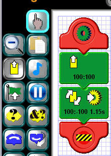
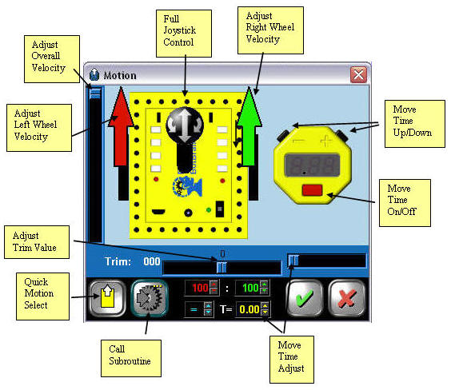
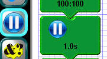
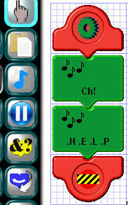
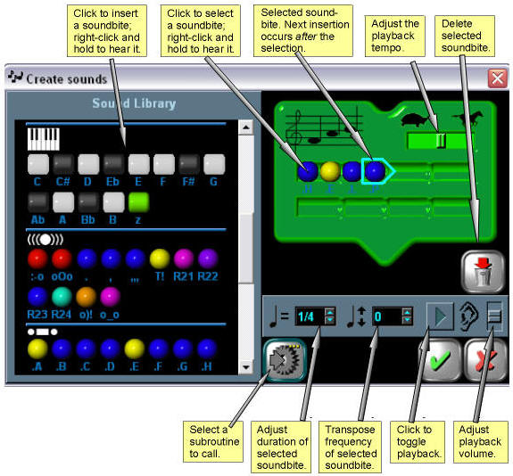
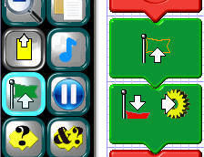

|
Action Tiles |
|
Motion Tile  The motion tile is what you
use to command the Robot to move or stop. It can be as simple as the top
tile in the example at the left suggests (i.e. move forward at full
speed) or more complex, like the second example (rotate right at about
full-speed for 1.15 seconds, then stop and call the "yellow"
subroutine). |
|
The motion tile edit control box
allows adjustment of the Robot's velocity in numerous ways, as the
diagram illustrates. It also allows you to choose how long you want the
robot to move in the chosen manner. This time can be selected in
0.05-second increments, up to 5 seconds. If you choose a time, the robot
will run for that amount of time and then stop. If you don't choose a time
(i.e. time = 0), the robot will run at the chosen speed indefinitely,
until commanded to do otherwise.
As with some other action tiles, the motion tile also allows you to call a subroutine once the programmed action is complete. Which subroutine to call is selected using the multiple-choice button with the gear on it. (Subroutines are discussed in a later section.) All multiple-choice buttons have three little yellow squares in their upper-righthand corner. You can cycle through the choices by clicking the button repeatedly. |
|
Pause Tile The pause tile is used to
suspend the robot's program temporarily for periods ranging from 0.001
second to 60 seconds. It will not change the robot's state, however. If
the robot is moving, it will continue to move during the pause. If any of
its LEDs are on, they will stay on. |
|
|
|
Sound Tile The sound tile is used to
activate the robot's speaker for playing short tunes, such as the bugle
call "Charge!" in the first example at the left, and sound effects,
such as spelling "HELP" in Morse code in the second example. The
program comes with a library of sound bites which can be strung together in
various sequences to obtain the desired sounds. It is also possible for the
sound tile to call a subroutine when it is finished playing a sound. |
|
Soundbites are copied from the
library into the sound tile by clicking on them. You can also right-click-and-hold
on any soundbite to hear what it sounds like and to see its full name
displayed. Soundbites are inserted in sequence, beginning to the right of the
selected tile (designated with the light blue outline). You can select any
soundbite in the tile by clicking on it. You can also select the position ahead
of the first soundbite by clicking to its left on the green tile image.
This allows you to insert soundbites in the first position, ahead of all the
others. To delete a soundbite, first click on it to select it, then click on
the trashcan button. Once you've assembled your sound sequence, you can play it back on your PC to test it by clicking the play button. The play button arrow will light up and remain lighted until the sequence has played back or until you click it again to stop it. You can adjust the overall tempo of your sequence before testing by using the slider at the top of the tile (the one with the turtle and racehorse). There's also a volume control for the PC that you can adjust during playback. The tempo control will also affect sounds coming from the robot when your program is uploaded. The volume control is only for the PC. In addition to the overall tempo adjustment, you can also adjust the tempo and frequency of individual soundbites in the sequence. This is done using the spinboxes to the left of the play button. The first controls the duration of the soundbite, 1/4 being the default duration. The second allows you to shift the frequency of the soundbite down an octave, or up by one or two octaves. These controls are used mainly for the individual note soundbites in the keyboard section of the library, so you can compose your own simple tunes. But they will work for any of the soundbites in the library. Important note: Use sound sparingly! Long sound sequences use up enormous amounts of the robot's program memory, and it's all too easy not to have any left for the other things the robot can do. |
|
Flag Tile The flag tile is used to
signal other parts of your program that some event occurred. There are seven
different-colored flags, and the flag tile allows any one of them to be
raised or lowered. Later, you can use a conditional tile to check the state
of a given flag and react accordingly. As in the second tile at the left, the
flag tile can also call a subroutine once it's raised or lowered a flag. |
|
|
|
Call Subroutine Tile
|
 The amount of time to wait is chosen
by moving the hourglass slider in the pause tile edit control box up and
down. The pause tile also includes a provision to call a subroutine after the
chosen duration is up.
The amount of time to wait is chosen
by moving the hourglass slider in the pause tile edit control box up and
down. The pause tile also includes a provision to call a subroutine after the
chosen duration is up.  The edit box for the flag tile is a
simple one. It has multiple-choice buttons for the flag action and for which
subroutine to call, if any.
The edit box for the flag tile is a
simple one. It has multiple-choice buttons for the flag action and for which
subroutine to call, if any.  The call subroutine tile is
used to call a subroutine without any other intervening action. Its edit box
is simply a multiple-choice button for choosing the subroutine to call.
The call subroutine tile is
used to call a subroutine without any other intervening action. Its edit box
is simply a multiple-choice button for choosing the subroutine to call.